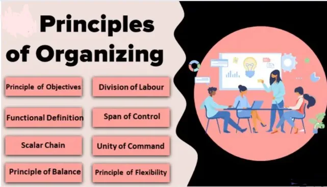
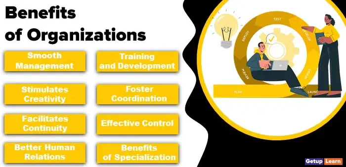
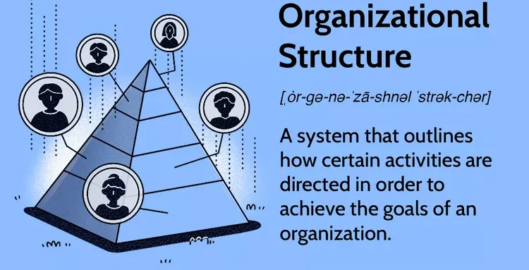
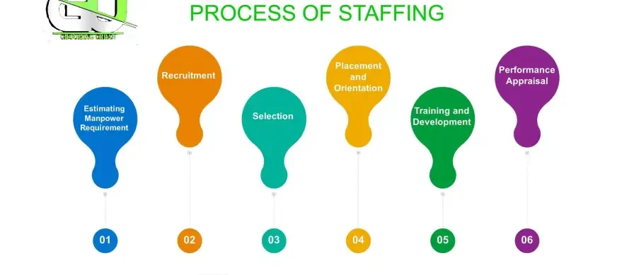

Expanded Nursing Uganda Explanation
Organizing should be understood beyond a short definition. Link the concept to patient history, focused assessment, common risks, nursing priorities, documentation and evaluation of outcomes.
01 Organizing
Organizing is the process of c ombining work, facilities , and resources to achieve specific objectives.
This function is very important to implement the plans efficiently and effectively. It involves identifying the workers of the organization, dividing the labor, developing the chain of command and assigning the authority. To organize a business means to provide it with everything useful for its functioning, i.e raw materials, tools, capital and personnel.
- When individuals collaborate to perform a task, it’s beneficial to divide responsibilities for efficient execution.
- Organization involves grouping people in a stable yet functional pattern.
02 Principles of Organization:
- Scalar Principle: Clear lines of authority from top to bottom (chain of command). Major decisions and policies are made at the top and filter down through management levels.
- Unity of Command: Each person reports to only one supervisor, eliminating ambiguity and confusion.
- Responsibility and Authority: Clearly defined and documented responsibilities and authority for each supervisor. Authority is the formal right to require action from others, while responsibility is the accountability for that authority.
- Accountability for Subordinates’ Acts: Higher authorities are responsible for the actions of their subordinates.
- Delegation of Authority and Responsibility: Delegation as far down the hierarchy as possible to place decision-making power near operations.
- Minimizing Levels of Authority: Fewer levels of authority facilitate easier communication, clarity, and faster decision-making.
- Specialization : Precise division of work leads to specialization, efficiency, and quality.
- Separation of Line and Staff Functions: Line functions are directly involved in achieving company objectives, while staff functions provide assistance and advice.
- Reasonable Span of Control: The number of positions coordinated by a single executive should be well-established.
- Simplicity and Flexibility: The organization should be simple for ease of management and flexible to adapt to changing conditions.
03 Advantages/Benefits of Good Organization:
- Achievement of Organizational Objectives: Proper coordination of all activities ensures that organizational goals are met effectively.
- Minimal Conflict: A clear chain of command reduces conflicts among employees as everyone knows their roles and responsibilities.
- Elimination of Overlapping and Duplication : Work is distributed efficiently, avoiding duplication and ensuring that all tasks are covered.
- Reduced Likelihood of Run-Around : Clear responsibilities prevent situations where individuals are unsure who is accountable for what.
- Facilitation of Promotions: The organizational chart clarifies the positions of individuals, aiding in promotion decisions.
- Simplified Wage and Salary Administration : Compensation policies are easier to apply with clear job benefits outlined in the organizational structure.
- Simplified Communication: Clear lines of communication and authority streamline communication processes.
- Effective Planning : Good organization provides a basis for short-term and long-term planning, such as expansions or contractions.
- Increased Cooperation and Pride : Employees have clear roles and responsibilities, fostering a sense of belonging, pride, and morale.
- Encouragement of Creativity : A clear organizational structure promotes resourcefulness, initiative, and innovation.
04 Organization Structure
These activities can include rules, roles, and responsibilities.
- Foundation for Management: The organizational structure serves as the basis for the entire management system.
- Division of Work : It defines teams and their collaboration, promoting specialization and efficiency.
- Hierarchy and Chain of Command: The structure establishes a clear hierarchy and chain of command, defining reporting relationships.
- Areas of Specialization : It indicates different areas of specialization, clarifying authority and responsibility.
- Decision-Making Clarity: The structure helps identify the appropriate decision-makers for each employee.
05 Staffing
Staffing is selecting the personnel to perform the work and placing them in posts suitable to their knowledge and skills .
The managerial function of staffing involves manning the organizational structure through proper and effective selection, appraisal, and development of personnel to fill the roles assigned to employees.
According to Theo Haimann, “Staffing pertains to recruitment, selection, development, and compensation of subordinates.”
Staffing is the management activity that provides for appropriate and adequate personnel to fulfill the organization’s objectives. The nurse manager decides how many and what type of personnel are required to provide care for patients. Usually, the overall plan for staffing is determined by nursing administration, and the nurse manager is in a position to monitor how successful the staffing pattern is and to provide input into needed changes.
Staffing is a complex activity that involves ensuring that the ratio of nurse to patient provides quality care. The situation of a nursing shortage and the high activity levels of admitted patients to acute care areas complicate this process.
Staffing depends directly on the workload or patient care needs. An ideal staffing plan would provide the appropriate ratio of caregivers for patients’ individual needs based on data that predict the census.
06 The Staffing Process
The staffing function consists of the following sequential steps:
- Job Analysis: Preparing job descriptions, job specifications, and conducting job analysis to understand the requirements of each position.
- Recruitment : Exploring all internal and external sources from where the required personnel can be recruited.
- Employee Selection : This crucial step involves using techniques to identify and select the most suitable candidates for the positions.
- Retention : Once the right people have been hired, they must be retained so that they stay with the organization for a long time. This step discusses factors that are influential in maintaining the workforce.
- Training and Development : This consists of programs that assist in the continuous growth and development of employees.
- Performance Appraisal and Career Development : This step involves devising methods to judge an employee’s performance over time and providing opportunities for employees to develop their careers and managerial talents.
07 Directing and Leading
Click Here
08 Nursing Uganda Clinical Lens
Use Organizing as a practical nursing topic, not only a memorized definition. Translate theory into safe decisions, accountability, communication and service improvement.
- What to understand first: define organizing, identify the normal or expected pattern, then explain what changes when the patient is unwell.
- Why it matters in care: the nurse must recognize risk early, explain findings clearly, document accurately and know when to escalate.
- How to revise it: connect each point to assessment, nursing diagnosis or care problem, intervention, rationale and evaluation.
09 Assessment Guide
- The problem, stakeholders, available resources, policy requirements and ethical issues.
- Risks to patients, staff, confidentiality, quality, costs and continuity.
- Documentation, reporting lines, supervision and evaluation measures.
10 Nursing Priorities, Rationales and Outcomes
- Use evidence, policy and professional standards to guide action.
- Communicate clearly, document decisions and protect confidentiality.
- Evaluate whether the action improves safety, learning or service delivery.
The rationale for these priorities is patient safety: nursing actions should prevent deterioration, reduce discomfort, support recovery and create clear evidence for the next caregiver.
- Expected outcome: The plan is documented, realistic, ethical and improves patient care or learning outcomes.
11 Patient Teaching and Revision Check
- Explain organizing in simple language the patient or caregiver can repeat back.
- Teach warning signs, medicine or follow-up instructions, hygiene or lifestyle points where relevant.
- For exams, prepare a short answer using: definition, causes or risk factors, signs, assessment, management, complications and prevention.
- For ward practice, document baseline findings, actions taken, patient response and the plan for review.
Illustrations and Diagrams (7)





Related Video Lectures
Watch nursing lecture videos on YouTube for this topic. Opens in a new tab.
Watch on YouTubeExternal link: YouTube may use its own cookies and terms. Nursing Uganda is not affiliated with YouTube.